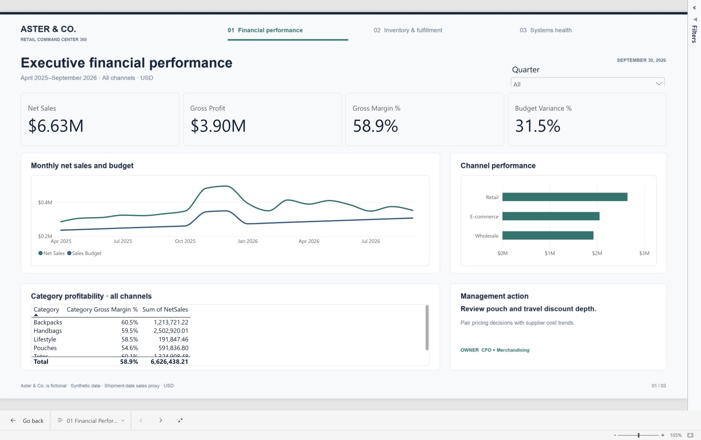

Business systems analysis · Native Power BI
Sales are growing.
Where is the friction?
One connected retail case study: investigate margin pressure, stock imbalance and orders that never reach the ERP. Turn validated data into clear management decisions.
Aster & Co. is fictional. Every record is synthetic and reproducible.
April 2025–September 2026 · Seven stores · 200 SKUs · 24,000 orders

Actual native Power BI Service capture. The public walkthrough presents captured report pages; it is not a live Power BI embed.
The investigation
Connect the symptoms.
Test the explanation.
Higher sales alone do not explain business health. Discounts, supplier costs, slow-moving inventory and synchronization failures need to be investigated together.
This project follows one consistent company from source orders and stock movements through reconciliation, business metrics and executive reporting.
01 / Margin pressure
Q3 sales grow from $978k to $1.08m while gross margin falls from 59.7% to 56.9%. Gross profit dollars still increase.
02 / Inventory imbalance
$1.91m of inventory coexists with six at-risk SKU/location pairs. Validate allocation and delayed receipts before buying more.
03 / System reliability
Reconcile 28 orders with $4,132.66 of ordered-value exposure. Missing events count too; correctly ignored duplicates are not duplicate sales.
Evidence, not assumptions
Built to inspect and reproduce.
Also verified: seven corruption/boundary control tests, 17 model relationships and numeric parity across both Excel workbooks. Native evidence and test outputs are in the repository.
What a reviewer can open
Business story and technical depth.
Three native Power BI pages, seeded Python data generation, SQL analyses, typed Power Query, DAX, data definitions, BRD/FRS, process maps, UAT and an optional guarded AI summary demonstration.